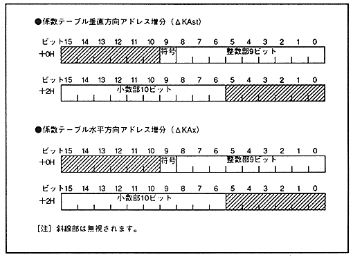

Return to previous page ｜ Return to menu ｜ Go to next page
- Figure 6.2 Rotation parameter data structure (continued)

-
■ Rotation parameter table
- One set of rotation parameter tables is a 60H size table and is stored in VRAM. Figure 6.3 shows the structure of one set of tables.
Return to previous page ｜ Return to menu ｜ Go to next page